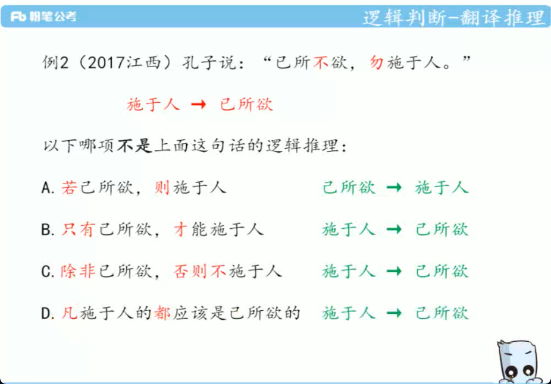
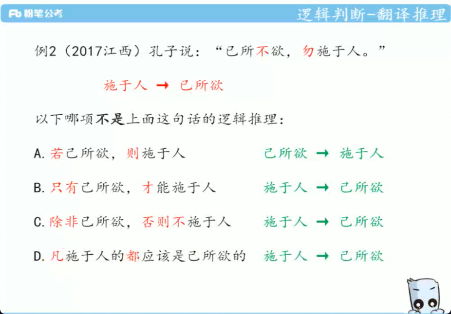
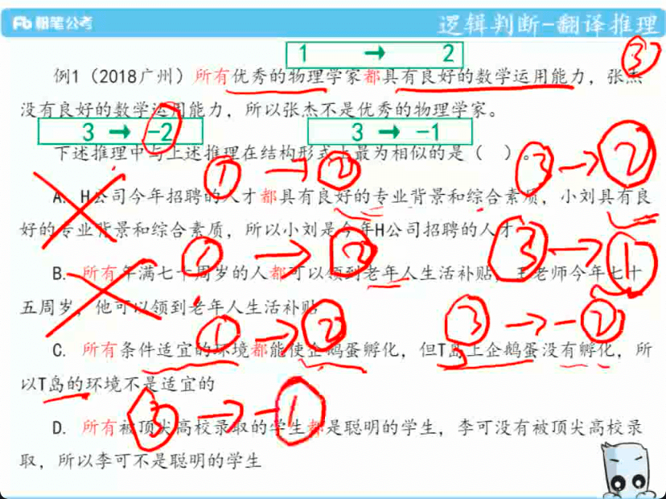
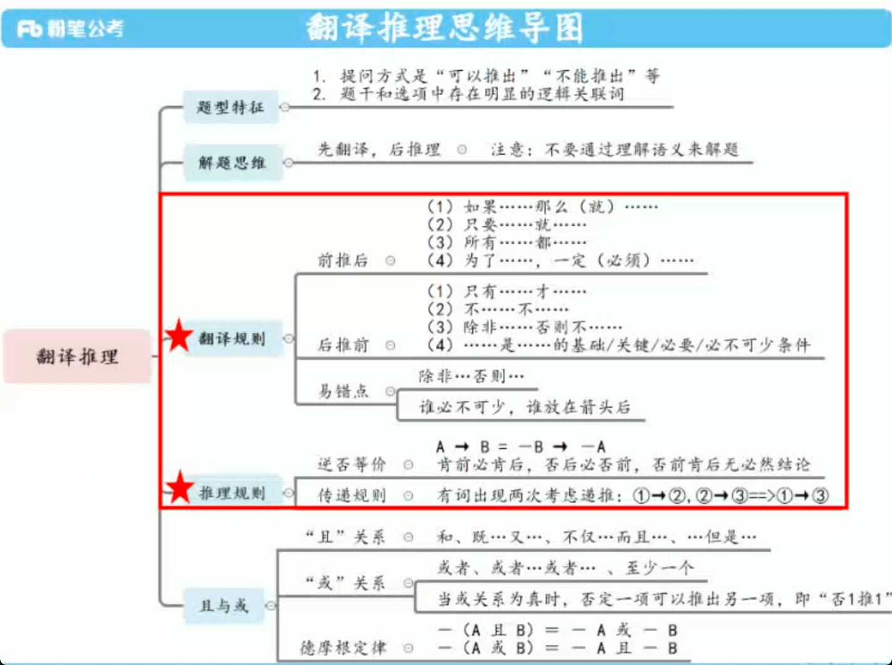
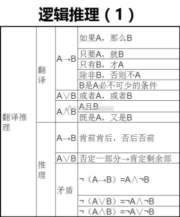
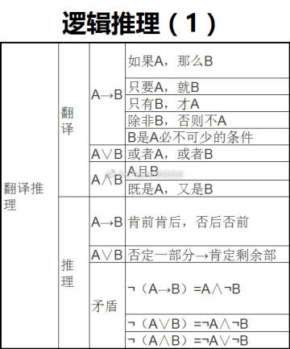
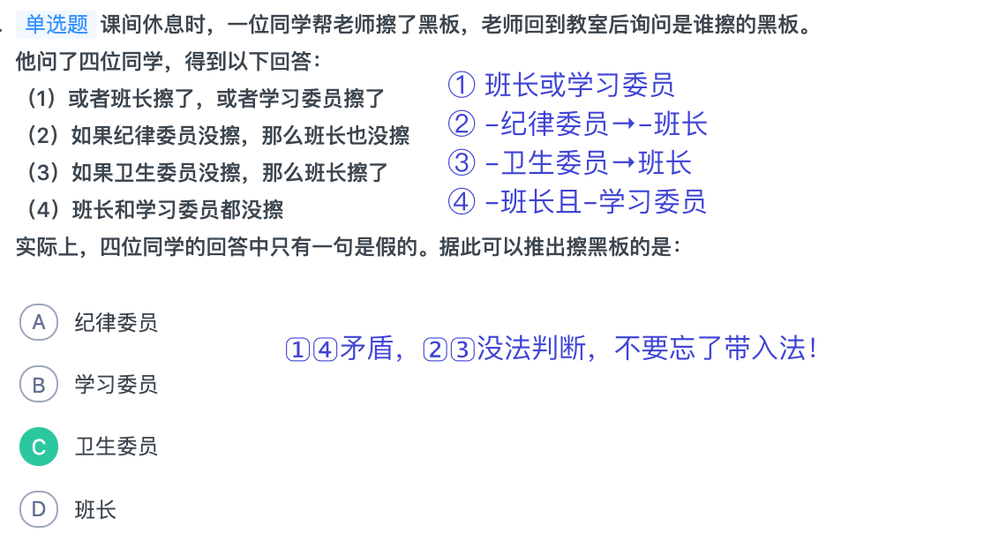
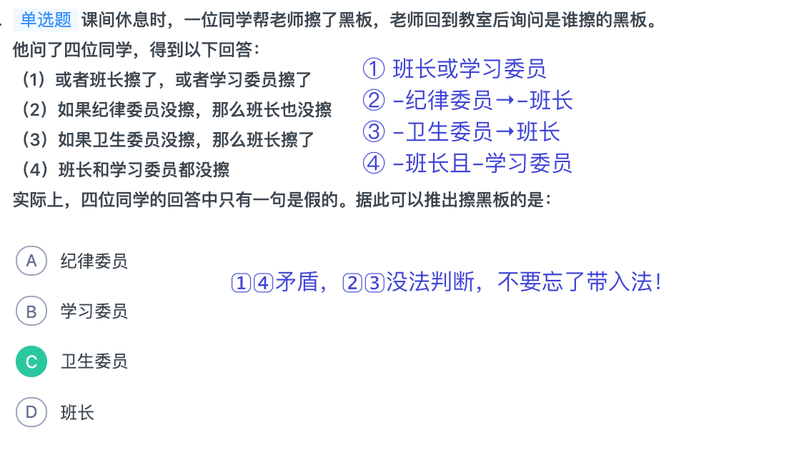

The good things are not dead.
--《肖申克的救赎》
第二阶段
直言命题
实例
例：有些 A 是 B = 有些 B 是 A
思考题： 画文氏图
- “有的 A 不是 B”是否能够换位？ ❌
- “所有 A 是 B” 是否能够换位？❌
推出关系：小推大，大不能推出任何。
小集合推出大集合。
- “某个”、“所有” 为小范围。
- “有的”为大范围。
- 但性质不变：是推是、非推非。
例：有些媒体很开放，所有媒体都关注民生大事。 据此，可以推出（ ）。
A.有些很开放的媒体关注民生大事
B.有些关注民生大事的媒体不开放
C.有些媒体不开放，但关注民生大事
D.有些媒体很开放，但不关注民生大事
解题思路；
- 似乎没有可关联性，
- 🤔直言命题–大小范围。
- 第一步：小推大。小范围：所有媒体关注民生=》大范围：有些媒体关注民生；排除D
- 大范围的，因为不能推出，所以照抄，有些媒体很开放，排除：不开放。排除BC
- 所有-是 和 有的非 矛盾。排除D
矛盾关系：一真一假
- 所有是–有的非
- 所有非–有的是
上反对：必有一假，可同假
下反对：必有一真，可同真
文氏图秒杀: 优先画所有的，有的画交
例：所有的甲都属于乙，有些甲属于丙，所有乙都属于丁， 没有戊属于丁，有些戊属于丙。 以下哪项不能从上述论述中推出？
A、有些丙属于丁 B、没有戊属于乙
C、有些甲属于戊 D、所有甲都属于丁
模态命题：一对词：必然（一定）与可能
1、模态词变化：必然变成可能。
2、量词变化：所有变成有的。
3、性质词变化：是变成不是、非、并非。
不一定 A = —（一定 A）=可能不 A
秒杀口诀：把“不”去掉，“不”的后面翻硬币。
训练 1、并非所有妹子必然喜欢高富帅 = 有的妹子可能不喜欢高富帅
训练 2、有的妹子可能不会画画 = 并非所有妹子必然会画画。 先说并非
训练 3、所有妹子不必然喜欢高富帅 = 所有妹子可能不喜欢高富帅。
训练 4、所有男生不都必然留胡子 = 有的男生可能不留胡子。 【难】
A=>B，B=>C，所以，A=>C。
三段论秒杀口诀总结：
第一步：所有法；
第二步：约分秒杀法；
第三步：从结论找 B 法。
杀手级陷阱：三个步骤是有顺序 的，不可跳跃。）
口诀一：“所有”秒杀法
式子中 B 符号起到传递作用，既然是传递作用，就要求前、后两个 B 是相同的，
即 B=>C 式子中必然是“所有”的B。
一定有个关联词–所有。
口诀二：约分秒杀法: 每个符号出现两次
式子中每个符号出现两次，即 A 出现两次，B 出现两次， C 出现两次。满足约分秒杀模型的基本构成。
某些公务员是行政管理专业的。因此，某些行政管理专业的人做管理工作。
A、所有公务员都做管理工作
B、某些公务员不是做管理工作的
C、某些行政管理专业的人不是公务员
D、所有行政管理专业的人都是公务员
E、所有管理工作 都是 公务员
- A->B; B->C;
- B起到链接作用，B相等；所有法，排除BC ，需要有“所有”
- 约分法，B已经出现了两次，剩余两个都加1。排除D
口诀三：从结论找 B 法。
有的A是B，有的B是A
所以定位到问题之后，如果✅哪个是A哪个是B，关乎所有➕在谁前边。
因此后，是A->C, 三个减后者的两个，就是B
因为 “因此”前，A和B有可能换位。
某些东方考古学家是美国哈佛大学的毕业生。因此，某些美国哈佛大学的毕业生对中国古代历史很有研究。为保证上述推断的正确，以下哪项必须为真？D
A、某些东方考古学家专攻古印度历史，对中国古代历史没 有太多的研究。
B、某些对中国古代很有研究的东方考古学家不是美国哈佛 大学毕业的
C、所有对中国古代历史很有研究的人都是东方考古学家。
D、所有的东方考古学家都是对中国古代史很有研究的人。
A. 疑是银河落九天
B. 桂林山水甲天下
C. 稻花香里说丰年
D. 二月春风似剪刀 钩不了沉秒杀解析：
第一步，能看出逻辑关系按照逻辑关系 做。主体：五岳与山是部分与整体的关系；逻辑关系：对比，即
五岳优于其他山。第二步，答案中主体符合部分与整体的只有 B。 桂林山水与天下风景。逻辑关系为“甲”即“优于”。故秒杀 B
约分，把相同的元素删除《看好位置》
例.我国的佛教寺庙分布于全国各地，普济寺是我国的佛教寺庙，所以普济寺分布于我国各地。 — 1 2 3 4 => 3 2
下列选项中所犯逻辑错误与上述推理最为相似的是：
A.父母酗酒的孩子爱冒险，小华爱冒险，所以小华的父母酗酒 — 位置不对
B.文明公民都是遵纪守法的，有些大学生遵纪守法，所以有 些大学生是文明公民
C.寒门学子上大学机会减少，大学生小飞不是寒门学子，所以小飞上大学的机会不会减少 — 题目是肯定句，这个是否定，排除选D，
D.现在的独生子女娇生惯养，何况他还是三代单传的独苗呢 => 现在的独生子女娇生惯养，他是独生子女，所以他娇生惯养
- 无法看出来推理关系。
- 标记相同的元素删除。
- 都转换为陈述语句；
- D很难
联言、选言、假言
解释
联言：就是通过“且”这个词连结。
选言：“或”命题。本质是选择命题。
不相容选言：要么…要么…；不是…就是…
记忆：要么 P 要么 Q，长得特殊，是杨过，独臂大侠，只有 一只胳膊，即有且仅有一个要件为真。
P 或 Q。矛盾公式：—（P 或 Q)=-P 且-Q。
[P 且 Q] 矛盾公式 [-p 或 -q]
如果 A，那么就 B。 A=>B |
秒杀口诀：谁是充分谁在前；谁是必要谁在后。
A=》B 的逆否命题
其实质是一种等价命题。我们讲过矛盾是翻动硬币一次。而 等价是翻动两次。（仍然是翻硬币体系的运用）
所以，变为等价命题就必须动两次。
第一步：动符号。-A=>-B
第二步：动位置。-B=>-A
题干较长，此时用逆向做题。只看关联词
一、宏观：逆向做题思维。1、逆向做题法。2、锁定关键词： 良知与制度的关系。3、代入。制度=》良知。（上课详细讲解）
二、微观：逆否命题，秒 A。
实例二
例：记者采访时的提问要具体、简洁明了，切忌空泛、笼统、 不着边际。约翰·布雷迪在《采访技巧》中剖析了记者采访时向 访问对象提出诸如“您感觉如何？”等问题的弊端，
认为这些提 问“实际上在信息获取上等于原地踏步，它使采访对象没法回答，除非用含混不清或枯燥无味的话来应付。”
由此可以推出：
A．记者采访时的提问如果具体、筒洁明了，就不会给采访 对象带来回答的困难
B．采访对象如果没法回答提问，说明他没有用含混不清或 枯燥无味的话来应付
C．采访对象只有用含混不清或枯燥无味的话来应付，才能 回答那些空泛、笼统的提问
D．诸如“您感觉如何？”这样的问题，只能使采访对象抓 不住问题的要点而作泛泛的或言不由衷的回答
题干太长，找到关键词，前后是个整体，不是为了懂，而是找关键词，
【实际上在信息获取上等于原地踏步，它使采访对象没法回答，除非用含混不清或枯燥无味的话来应付】
推出： 非【用含混不清或枯燥无味的话来应付】=》【实际上在信息获取上等于原地踏步，它使采访对象没法回答】
1、逆向做题法。
2、锁定关键词：
A、具体简洁与采访对象困难。
B、没法回答提问与含混不清或枯燥无味。
C、含混不清或枯燥无味的话与空回答提问。
D、你感觉如何与泛泛。
发现四个选项 BC 集中在于回答与含混不清或枯燥无味的话。
3、 寻找图形符号：题干为除非用（-）含混不清或枯燥无味的话来 应付=》没法回答。B 逻辑关系反了。
二、微观：
逆否命题，回答=》含混不清或枯燥无味的话。 秒 C。
假言：A=>B
它的矛盾命题是联言：A 且非 B
而这个联言命题的矛盾命题是选言：-A 或 B
矛盾的矛盾是等价：硬币翻了两次。
所以，假言 A=>B 的等价是选言 -A 或 B
平时遇到一道题出现三种命题形式，核心考点就在于三种命题转化。
关于三种命题转化的深入探究分析，由此产生出秒杀技巧：
正负相消思维：A=>B，B=>C,A=>C 衍生出来的东西
假言 A=>B** 的等价是选言 -A 或 B
正负约分题型
正负约分题型秒杀步骤：
第一步，钥匙法。
第二步，题干或为主正负约分法。
第三步，题干非或为主正向代入法。
难题
据此，可以推出该市应选择的特色树种是（）
A、柳树或者桃树
B、樟树或者桂树
C、雪松或者柳树
D、雪松或者樟树
没有钥匙🔑
第一步：钥匙法发现无钥匙。
第二步： 题干或为主正负约分法：
（1）樟或柳 （2）桂或雪
（3）—柳 或 桃
（4）—桃或—雪。
正负约分法，就是一正一负约去
约分剩下：樟、桂。秒 B
传递关系对照、原理
A=>B -A或B
B=>C -B或C
A=>C -A或C
逻辑学中有三大定律：同一率、排中率，矛盾率。
- 同一率找矛盾
- 跳出矛盾运用矛盾。
小李：甲是工程师，乙是教师。
小王：甲是教师，丙是工程师。
小方：甲是律师，乙是工程师。
后来证实，小李，小王和小方都只猜对了一半。那么，甲、 乙、丙分别从事何种职业？
A. 甲是教师，乙是律师，丙是工程师
B. 甲是工程师，乙是律师，丙是教师
C. 甲是律师，乙是工程师，丙是教师
D. 甲是律师，乙是教师，丙是工程师
钩不了沉秒杀解析：
第一步：发现既不是正负约分题，又不 是矛盾题，因为题干说了各猜对一半。
第二步：此时，要么列表 要么代入，列表法也可以，因第五节课讲列表法，先用代入法。
因为题干要件不是全对，只能反向代入。
A、代入发现小方全错，
B 代入发现小王全错，
C 代入发现小李全错，
D 代入发现符合。
秒 D。
此题说明了另外一个问题：代入法。
即正向代入与反向代入的区别，
如果题干均为正确要件，则正向代入为主。
如果题干本身无法确定真假，则反向代入验证题干。
归纳总结：
一、推出关系转化成“或”、“且”（也就是三种命题之间 的转化），何时转化，何时不转化。
- 选项为判断真假问题的时候，推出转化为“或”、“且”；
- 选项为判断推出关系，“或”、“且”转化为推出。
二、矛盾题和正负相消的区别：
- 矛盾题题干中几句话有真有假，
- 正负相消题中题干的话全为真。
三、矛盾题和正负相消题除了上课讲的题型以外的变态题型，都用代入法或列表法解决。
假设题
解释
补全
注意：逻辑题论点非常明显，不需要特别去找，难在如何压缩
步骤
- 压缩论点、论据
- 对比论点论据得出 模型公式
- 从答案中确认模型结论
- 论据：a->B; 论点： A => B;
- 隐含的条件：A = a+b;
- 补充的前提：b => B;
难点
- 快速压缩论点、论据；
- 识别包含、相交、相离。
- 利用公式。
有专家认为，全球经济正缓慢复苏，其主要证据是，美 国的经济表现超出预期，在就业和住房方面都有不错的表现；欧 洲央行启动了融资运作计划，用比较低的利率贷款，为更多的企 业以及中小企业进行融资；全球整个大宗商品市场树立了足够的 信心。因此，这都是非常好的迹象。
如果以下各项为真，最有可能成为上述论证前提的是( )。
A.专家先前对美国经济表示不乐观
B.欧洲央行原有利率交稿，银根紧
C.非欧美国家的经济状况保持稳定
D.全球大宗商品交易缺乏信心支持
解释
概念
- 论据：A=>B 论点：A=>C 约分：把 A 约掉。
- 得，B=>C
- 实质就是三段论。每个符号都出现了两次
约分，相同的约分。
没有方法，做不对
搭桥（相离用搭桥）。所谓相离，就是论点与 论据无关系。
概念
假设：论据：A、 论点：B 。 需要补充的为：A 与 B 的关 系
（2019 年省考）自制力不仅关乎自我控制，还包括排除不相关刺激的干扰和坚持完成相关任务（即使是自己不喜欢的任务）的能力。自制力是稳定不变的，还是会被消耗的，学界各派的看法不一。心理学家把实验对象分为两组，让他们同场解决难题。一组解题时只能吃萝卜，另一组还可以吃饼干。结果只吃萝
卜的这组坚持时间更短，因为他们在抵制饼干的诱惑的同时，消耗了自制力。他们由此得出结论：人们的自制力是有限的，过度使用会导致自制力下降。
上述结论的成立需要补充以下哪项作为前提？
A 实验对象对解决难题的兴趣不完全相同
B 饼干和萝卜对实验对象的诱惑力不相同
C 饼干和萝卜补充人体能量的效果不相同
D 两组实验对象抗干扰的能力不完全相同
钩不了沉秒杀解析：
第一步：压缩论点论据：论据：实验 论点：自制力有限。
第二步：分析可得，论点论据相离用搭桥。
第三步：搭桥：ACD 均为海绵模型，B，完善实验中自制力消耗不同。秒 B。
注意，此题首次将假设题型和削弱题型嫁接。
矛盾（相切用矛盾）。所谓相切，就是论点与 论据出现矛盾的 转折词。
重点
- 转折词；然而、但是、但。。。
- 直接看挨得最近的那句话
- 缺A或搭桥，有时候有些晦涩。
概念
- 题型特征：xxx论据xxx; 然而论点：A。
- 确认论点：A;
- 如果论据中没有 -A， 答案找；【缺A模型】
- 否则，解释 A；【架桥模型】
- 就是围绕论点去找、去解释。
（2018 年省考）宇宙加速膨胀是因为物质之间相互排斥， 减速膨胀是因为物质之间相互吸引。因此，要在此基础上解释宇 宙的加速或减速膨胀，必须要有不同特性的物质在不同的时期占 主导地位，从而产生强大的排斥力或吸引力。粒子物理标准模型 中的所有粒子都产生吸引的引力，
然而 星系转动曲线 的研究表明，在星系里面还有大量的、看不到的物质，这些物质可以产生非常强大的吸引性引力。
以上论证如果为真，那么星系转动曲线研究结论隐含了下列哪一项前提？
A. 粒子物理标准模型中的所有粒子产生的吸引性引力不足
B. 粒子物理标准模型中的粒子不是唯一的，存在其它粒子
C. 星系转动曲线的研究说明这个时期的宇宙正在加速膨胀
D. 星系转动曲线的研究说明存在超大质量、看不到的黑洞
钩不了沉秒杀解析
第一步：压缩论点、论据。确认题型： 在论点论据中出现了“然而”。
第二步：对比论点、论据。
可知：为矛盾关系【缺 A 模型】。
论点为：物质、强吸引力，要想补充矛盾，必须为 弱吸引力，秒 A。
早期 预警系统通过测量 P 波沿地面移动的情况，来预测 S 波所造成的影响，然后发出警报。
然而，从事此类系统工作的科学家们发现， 事实上人们并没有多少时间为大地震做好准备。
要得到上述结论，需要补充的最重要前提是（ ）
A．地球上每年大约发生 500 多万次地震，绝大多数的地震 人们根本感觉不到
B．根据历年大地震的记载，强震大多在夜里瞬间发生，无 法在短时间内组织有效的防御行动
C．地震越大，P 波与 S 波之间的间隔越短，留给人们预警 的时间不多
D．发生较大地震时，人们先感到上下颠簸，而后才有很强 的水平晃动，这种晃动是由 S 波造成的
钩不了沉秒杀解析：213 读题：假设题。
第一步：压缩论点、 论据。在论点论据中出现了“然而”。
第二步：对比论点、论据。 论点：无时间准备。论据：可以警报（有时间）可知：为矛盾关 系架桥模型。
构建，警报与无时间关系，秒 C。题干中的原理不用读，这就是逻辑关系秒杀的魅力。
杀手级总结：缺 A 模型其实是补全，架桥模型其实是搭桥， 回归五幅图。
加强削弱
解释
加强： 213 读题模式：
第一步：论点前置法。
第二步：压 缩主题法。（≥2 个主体关系）
第三步：符号重合度。（主题、 逻辑关系的重合）
★注：加强不需要五大思维。+、－、0 体系会在习题中讲 解。
削弱：213 读题模式：
第一步：论点前置法。
第二步：五大 思维法。
第三步：答案主题骨架分析法。（大于等于 2 原则，结 合五大思维）
解释
标志性：一般情况因为 A，所以 B。
本质：A=>B
加强：符号的重合度。
削弱：
- 最强削弱：A 且-B.（了解）
- 次之：因果倒置。（了解）B->A； -B或A
- 再次之：—A（否因）、隔断因果联系。（重点）
- 最后：—B（否果）（了解）
以下哪项如果为真，最能支持反对者的看法？
A 10~12 个月的婴儿已经知道 3 个黑点和 4 个黑点是不一样的
B 数学是大脑的产物，而大脑的生长模式早已由基因“预设”
C 经过人为训练的大猩猩、海豚和大象等动物能处理数学问题
D 绝大多数的原始部落的居民只能表示 5 以下甚至更少的数量
钩不了沉秒杀解析：213 读题：加强。
第一步：论点前置法。
第二步：主题与逻辑关系：数学能力、天赋-、文化+。又再考察三个主题的逻辑关系。
第三步：符号重合度：
A、婴儿=天赋。3、4黑点=数学能力，削弱，
B、数学能力、大脑。主题不一致。
C、大猩猩=-文化、数学能力，削弱。
D、原始部落=文化，5 以下=数学能力—，加强，逻辑关系也重合。
秒 D。
例、在一次考古发掘中，考古人员在一座唐代古墓中发现多 片先秦时期的夔文（音 kui,一种变体的龙文）陶片。
对此，专家解释说，由于雨水冲刷等原因，这些先秦时期的陶片后来被冲 至唐代的墓穴中。
以下哪项如果为真，最能质疑上述专家的观点？（ ）
A．在这座唐代古墓中还发现多件西汉时期的文物
B．这座唐代古墓保存完好，没有漏水、毁塌迹象
C．并非只有先秦时期才使用夔文，唐代文人以书写夔文为能事
D．唐代的墓葬风俗是将墓主生前喜爱的物品随同墓主一同下葬
钩不了沉秒杀解析：213 读题：
第一步：论点前置法。
第二步：因果论证思维：因：雨水冲刷，果：秦陶片—唐墓。因果削 弱主流削弱是削因。
第三步：答案主题分析法：A、唐墓—西汉文物。无关。B、—雨水冲刷。削因。C、唐人—夔文。无关。D、 唐墓主—随葬物品。无关。秒 B
引申分两种
- 必然性引申
- 可能性引申
十大陷阱之二：引诱可能性引申
实例
某市为了发展文化强市战略，在 2008 年、2010 年先后 建成了两个图书馆，2008 年底共办理市民借书证 7 万余个，到 2010 年底共办理市民借书证 13 万个，2011 年，该市又在新区建 立了第三个图书馆，于 2012 年初落成开放，截止 2012 年底，全 市共计办理市民借书证 20 余万个。
市政府由此认为，该项举措是有实效的，因为在短短的 4 年间，光顾图书馆的市民增加了近两倍。
以下哪项如果为真，最能削弱上述结论？
A．图书馆要不断购置新书，维护成本也很高，这会影响该 市其他文化设施建设
B．该市有两所高等学校，许多在校生也办理了这 3 个图书 馆的借书证
C．很多办理了第一个图书馆借书证的市民又办理了另外两个图书馆的借书证
D．该市新区建设发展迅速，4 年间很多外来人口大量涌入 新区
钩不了沉秒杀解析：213 读题：
第一步：论点前置法。
第二步：因果论证思维：因：市民增加两倍，果：措施有效。因果削弱主流削弱是削因。
第三步：答案主题分析法：
A、维护成本高其他建设。无关。
B、两所高校。不是市民。
C、市民办理多个证 件，削因。无关。
D、外来人口涌入，并没有说人多看出就多。
引诱间接引申。秒 C。
联网+科普”令科学知识的获取和传播方式发生了很大变化，但这不是对科普传播的一种颠覆，而是显示了公民科学素养的提升。
以下哪项如果为真，最能质疑研究者的观点？
A 新闻应用、微博等资讯类媒体是用户了解科学热点事件的最主要渠道
B 在许多科学热点事件的传播过程中，公众很难见到权威科学家的身影
C 数据表明，用户普遍乐于通过图文资讯这样轻松愉悦的形式获取知识
D 比起明星八卦，在社交媒体转发科普内容更能为转发者本人形象加分
钩不了沉秒杀解析：213 读题：第一步：论点前置法。第二 步：因果论证思维：因：科学素养提升，果：传播方式变化。主流是削因，注意论点里出现三个主题的逻辑关系。
第三步：答案 主题分析法：
A、加强果。
B、强调科学素养的突出，加强因。
C、加强果。
D、强调科学素养并没提升，削因。秒 D。
三个主题的 逻辑关系知识点再逐步凸显。
标志性：通过 A 达到了 B 的目的。为了 B 这个目的，我们采 用 A 这种手段,出现目的、手段、达到、政策等词。
本质：A=》B。与因果的区别在于这个 A 是一个方式、手段。
加强：符号重合度。
削弱：其核心会从以下几个方面做考点：
- 最强削弱：方式不能达到目的。（重点掌握）
- 次之削弱：方式不可执行（重点掌握）
- 最弱削弱：方式没有意义、有负面效果（了解即可，考察概率小）
命题陷阱角度分析：
- 顾左右而言他；
- 弱加强选项。
以下哪项如果为真，将削弱这一研究发现？（ ）
A．一些虫黄藻能够比耐热的其他藻类耐受更高的海水温度
B．有些藻类耐热性的形成需要一个长期的过程
C．有些虫黄藻逐渐适应了海水温度的升高并存活下来
D．有些已白化的珊瑚礁中也发现了死去的耐热藻类生物
标志性：枚举论证是指一个一个的列举出来。抓住这个核心 就能区分出这种题型的特点。
本质：个体—整体；特性—共性；一般性—普遍性。
加强削弱：样本是否具有科学性、代表性。
以下哪项如果为真，最能对该实验者的结论构成质疑?
A.实验者选取的 20 个词语不具有代表性
B.实验者选取的 30 位识读者均没有博士学位
C.实验者选取的 20 个词语在网络流行语言中不常用
D.“呱呱坠地”这个词的读音有些大学老师也经常读错
钩不了沉秒杀解析：213 读题：削弱：
第一步：论点前置法。 发现答案无论点叙述，且有样本和代表性标志性字眼。
第二步： 五大思维法：枚举思维：样本：抽样对词语调查。共性：当代的 识字水平。
第三步：不具有代表性，秒 A
★本题属于典型的枚举思维考察，本题还有另外一个用意， 有些学生会认为 B 也是对样本不具有代表性削弱。B 有两个问题： 1、没有博士学位没有不具有代表性削弱严谨。2、本题中心在于对识字水平的削弱，而不是在于对学位问题探讨。本题综合性较 强，综合了枚举思维的普通点和难点，故不再用多余习题赘述。
标志性：两个主体。A 比 B 好；
本质：A>B A < B A=B A 不等于 B；
加强：符号重合度。
削弱：
- 最强削弱：A 是否比 B 好，论点削弱。
- 次之削弱：海绵模型：对比的样本被污染，对论据的削弱。
陷阱
- 对比范围
- 中庸选项
- 什么是海绵模型；
- 对比的样本不纯正、有污染；
- 作用针对：削弱题，削弱论据。
- 海绵模型选项特征；
- 污染论据，污染样本；
- 去海绵🧽，是对论据的加强
- 对比的范围
- a > b
- a = b
- a < c
- 海绵模型逆向
- 加强论据
★注：从加强削弱的题型上来说，分为肯定性与否定型。
- 肯定性：最能加强、最能削弱，选最优的；
- 否定型：最不能加强或者最不能削弱
- 最不能加强：可能是削弱，可能是无关
- 最不能削弱：可能是加强，可能是无关
削弱主要看模型；
加强主要看论点；
加强题做题步骤：
- 论点前置；
削弱题做题步骤：
难题—好好思考🤔
难题🚩🚩
例.某研究团队让两批测试者分别进入睡眠实验室里睡上一 夜, 第一批被安排睡得很晚, 从而减少总睡眠时间; 第二批被 安排睡得早, 但在睡眠过程中多次被吵醒。第二晚过后, 结果就 已经显现: 第二批测试者的积极情绪受到严重影响。他们的精力 水平较低, 同情心和友善度等积极情绪指数有所下滑、部分研究 者据此认为, 被吵醒导致了测试者无法得到足够的慢波睡眠, 而慢波睡眠是恢复精力感的关键, 但也有研究者对此项研究的 可信度提出质疑。以下哪项如果为真， 最能反驳质疑者？
A. 第一批测试者积极情绪的指数下滑程度不太明显
B. 第二批测试者中大部分人长期以来情绪不够积极
C. 两批测试者的健康状况和心理素质原本就很接近
D. 两批测试者在参与睡眠实验前精力水平参差不齐
自我理解：
- 反驳质疑者：负负得正，是加强论点的题目；
- 选项，首先BD海绵模型，排除，因为海绵是针对削弱题型的；
- C是去海绵，加强论据；
- A直接加强论点，侧面说明论点正确，做铺垫。
钩不了沉秒杀解析：213 读题：
第一步：论点前置法。
第二步：五大思维法：因答案中出现实验对比，基本确定对比论证思 维中的海绵模型。
第三步：答案主题法：本题最大的亮点在于， 题干为最能反驳质疑者，其实是加强题干实验，
所以 B 选项和 D 选项很好排除，因为均为海绵模型，是削弱，
而本题实质考察加强，按道理此题应该是去海绵，就是使得样本在同一起跑线，应该选 C，大错特错，海绵模型是对比源头，削弱时力度强，
但加强时 A 直接加强结论，更强，秒 A。此题应当好好研究。
事例
A．成年人中，女性在和同学、父母、子女谈话时，大多占 据主导地位，而男性则较为收敛，要稍逊一筹
B．在辩论赛或一些富有争议的话题中，男性往往滔滔不绝， 而在涉及情感的话题中，女性则发言更多
C．研究发现，在夫妻之间的交谈中，男女双方的平均谈话 量差异不大，只是因地域不同而有差异
D．一般年纪小的女孩比男孩平均说话更多，这与其语言学 习速度较快有关：但 13 岁以后，男孩平均比女孩说话更多
钩不了沉秒杀解析：213 读题：
第一步：论点前置法。
第二步：压缩主题法：男话语量≈女话语量。
第三步：符号重合法： B、C、D、均不在同一范围进行对比，不符合。秒 A。
这个考点在加强削弱中可能会出现在答案中，结合练习题 讲。
主要标志： A：abcd ,B:abc =>B 中也有 d
★章节补充考点：
1、可能性选项：如果考题中出现可能性 选项，即出现“可能”、“大概”等字眼，一般不选，除非其他 选项均不靠谱。因为逻辑的削弱和加强最优需要观点明确和严谨。
2、两面性选项：如果选项中出现两面性选项，即 A 好，但 A 有一些问题。这种选项本身观点不明确，根据最优原则，一般 不入选。但要知道，整体选项的观点是在强调“但是”后面。
解释
</div>
</details> 解释
</div>
</details> 解释
★解释类题型本质在于题干中出现前后矛盾的情况，需要你加入一个桥梁使得矛盾两方面均能够成立，故正确选项必须兼顾两方面。
A．该地区空气中的部分二氧化硫是从周围地区漂移过来的
B．虽然二氧化硫的排放得到控制，但其效果要经过一段时 间才能实现。
C．机动车的大量增加加剧了氮氧化物的排放，而氮氧化物 也是造成酸雨的重要原因
D．尽管二氧化硫的排放总量减少了，但二氧化硫在污染物 中所占的比重没有变
钩不了沉秒杀解析：
第一步：寻找矛盾点：前提：硫酸降低， 结果：酸雨升高，矛盾。
第二步：兼顾矛盾法：
A、违背硫酸降 低前提。不兼顾。
B、前提符合，结果不符合：一段时间实现， 至多酸雨持平，不可能上升。
C、前提符合：可满足硫酸降低的 可能，结果符合：氮氧化物造成酸雨上升。
D、前提符合，结果不符合：比重没有变的情况下，二氧化硫减少，证明总量减少。 不符合酸雨上升，秒 C 。
- 言语 逻辑 分开
- 数量 资料 分开
- 做个模块，图一次卡
- 考前
- 晚上，做一套行测试卷；不要对答案；
第一阶段
翻译推理
联言与选言
相容选言：“或”命题。本质是选择命题。
不相容选言：要么…要么…；不是…就是…
假言命题：关联词进行连接的两句话。 内在的逻辑关系是“=》”推出关系 例如：
- 如果 A，那么就 B。 A=>B
- 只要 A，就 B。 A=>B
- 只有 A，才 B。B=>A
- 除非 A,否则 B。 -A=>B
秒杀口诀：谁是充分谁在前；谁是必要谁在后。
【注意】论点有 A 也有 B，即 A→B。加强可以说“没有 A 就没有 B”，削弱 可以说“没有 A 但有 B”。
（2018 辽宁）某校招聘专任教师时有张强、李颖、王丹、赵雷、钱萍 5 名 博士应聘。3 人毕业于美国高校，2 人毕业于英国高校；2 人发表过 SSCI 论文， 3 人没有发表过 SSCI 论文。已知，张强和王丹毕业院校所在国家相同，而赵雷 和钱萍毕业院校所在国家不同；李颖和钱萍发表论文的情况相同，但王丹和赵雷 发表论文的情况不同。最终，英国高校培养的一位发表过 SSCI 论文的博士被录 取。
由此可以推出：
A.张强没发过 SSCI 论文
C.王丹毕业于英国院校
B.李颖发表过 SSCI 论文
D.赵雷毕业于英国院校
相同归大，要小排相同
不同里边出现两次的被选中
【注意】
- 只有 5 人，被分为“3+2”的形式，才可以使用该方法。“相同归大”的“大” 指 3 人，如上题（2018 辽宁）选择“英国”，是 2 人中的；“发表过 SSCI”也是 2 人中的，选择的都是小的，所以要把“相同”的“大”（3 人）排除掉。
- 但凡做题遇到 2 次的题目，一定有“套路”。

后推前
除非 A 否则 B =》 -B -> A
除非 A 否则不 B =》 B -> A
谁必不可少 就放在箭头后边
 
且 或
德 摩根定律
实例
推理方式
提问方式：以下哪项中的推理形式/结构与题干中的推理形式/结构相同？
照这写就行

真假判断
 

直言命题
矛盾关系
特点：矛盾关系必有一真一假
“所有A是B”与“有的A不是B”是矛盾关系
“所有A不是B”与“有的A是B”是矛盾关系
一个命题前面加“并非”，等值于这个命题的矛盾命题，表示如下：
并非“所有A是B”=有的A不是B
并非“有的A不是B”=所有A是B
并非“所有A不是B”=有的A是B
并非“有的A是B”=所有A不是B
可记为：“所有”与“有的”互换，有“不”的去掉，没“不”的加上。
反对关系
特点：反对关系必有一假，可以同假
“所有A是B”与“所有A不是B”是反对关系
下反对关系
特点：下反对关系必有一真，可以同真
“有的A是B”与“有的A不是B”是下反对关系
推出关系
特点：推出关系可以同真，也可以同假
“所有A是B”与“有的A是B”是推出关系
“所有A不是B”与“有的A不是B”是推出关系
 
组合排列
题型特征
- 题干给出两组以及两组以上对象
- 给出几组对象之间的关系
排除法、代入法
- 何时用：题干条件为真，选项信息充分。
- 如何用：读一句，排一句
辅助技巧
日常结论
类似于言语的细节判断题干： 言语、无逻辑关联词
提问：由此可以推出、不能推出
解题思路- 不选
- 逻辑错误
- 无中生有
- 偷换概念
慎选- 比较关系：比。, 越来越。、更
- 绝对词：一定、必须、肯定、只要就、只有才
- 程度：最、极大、很。
- 范围的扩大
- 优选
- 词汇：可能、有的、有些。
警惕五大坑王：更！最！越！首！极！
逻辑论证 🚩
概念
加强
解释原因 & 举例子
- 只有论点
- 论点与论据话题不一致

论点&论据搭桥


必要条件
属于补充论据

总结
示例–解释说明
1. 论点：伐木 & 文明
2. 解释说明：伐木 与 文明的关系
示例–搭桥
1. 论点：文明。
2. 论据：伐木。
3. 搭桥：伐木 与 文明的关系
削弱
否论点 & 举反例
拆桥-论点&论据
注意
否定论据
❌易错点❌
对策
选项中出现对策类的词汇，并不知道对策是否执行，所以一定要注意，有问题–不选择
如：
- 法律 应该 制定 …
- 企业 应当 担负 …
诉诸无知 == 不知道
不知道的论据，不能当论据了，不选择。如：
- 没有实际数据显示。..
- 没有研究表明。…
- 我们
没注意到。..
超出范围
如果讨论的是 [A, B], 结果来了个论据是 还有更好的，超出谈论范围，不选择
无关选项
和话题、主体不一致的不选择
类比的选项
类比一般比较弱，慎选 如：两者类似
- 本文链接： https://simuty.com/2020/05/15/civil_servant_inference/
- 版权声明： 本博客所有文章除特别声明外，均采用 BY-NC-SA 许可协议。转载请注明出处！